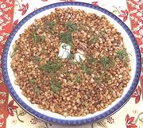

|
Buckwheat KashaRussia - Grechnevaya Kasha | ||||
| Serves: Effort: Sched: DoAhead: |
4 side * 35 min Yes |
Buckwheat makes a flavorful and easy to make "cereal", though it's the seed of a plant related to rhubarb, not a grain. This dish is a fine breakfast for two, or a side dish with meats for four. | |||
|
1 1 2 1/2 2 ------ tt Lots |
c c t T --- |
Buckwheat (1) Egg (opt. 2) Water Salt Butter -- Serve with Pepper, black Butter, soft |
See Variations. Note that the word "Kasha" does not properly mean "Buckwheat", raw or roasted. It applies to any grain cooked in water or milk. Make: - (35 min)
|